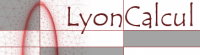

Workshops 2013¶

Journée en l’honneur de Jean-Pierre Hansen
December 13, 2013 - Institut Henry Poincaré, Paris, France
Jean-Louis Barrat, UJF Grenoble
Daniel Borgis, ENS
Jean Clérouin, CEA
Ralf Everaers, CBP, ENS de Lyon
Benjamin Rotenberg, UPMC
Gilles Zérah, CEA

Journées du Centre Blaise Pascal - Data Analysis and Modeling in Life Sciences
November 28, 2013
Centre Blaise Pascal, ENS Lyon, France
Paul Fleurat-Lessard, Laboratoire de Chimie - ENS de Lyon
Claire Loison, Laboratoire de Spectrométrie Ionique et Moléculaire - Université de Lyon / CNRS
Cerasela Calugaru, Centre Blaise Pascal - ENS de Lyon
{kind=link}
Workshop on Numerical Modelling of Grains/Fluid Flows
November 5-6, 2013
Centre Blaise Pascal, ENS Lyon, France
Nicolas Taberlet, Physics laboratory, École normale supérieure de Lyon, France
{kind=link}
Inauguration de la nouvelle plateforme de calcul de la FLMSN
October 16, 2013 - Université Claude Bernard Lyon 1, France
October 17, 2013 - Ecole normale supérieure de Lyon, France

Efficient solution of large systems of non-linear PDEs in science
October 7-9, 2013
Centre Blaise Pascal, ENS Lyon, France
Rolf Walder CRAL, École normale supérieure de Lyon, France
Eric de Sturler, Department of Mathematics, Virginia Tech, Blacksburg, Virginia, USA
Isabelle Baraffe, University of Exeter, GB
Maxime Viallet, Max Planck Institute for Astrophysics, Garching, Germany
Doris Folini, Institute for Atmospheric and Climate Science, ETH Zurich, Switzerland & CRAL, ENS de Lyon, France

Geoturb: Numerical Modeling and theoretical challenges in atmosphere and ocean turbulence
October 2-4, 2013
Centre Blaise Pascal, ENS-Lyon, France
Antoine Venaille, Physics laboratory, École normale supérieure de Lyon, France
Freddy Bouchet, Physics laboratory, École normale supérieure de Lyon, France

Influence of Interfacial Interactions on Structural and Rheological Properties of Confined Liquids
September 23, 2013
Centre Blaise Pascal, ENS Lyon, France
Claire Loison, Lasim, UCBL-CNRS, France
{kind=link}
Journées de Physique Mathémathique Lyon: Topological insulators
11-13 september 2013
Institut Camille Jordan, Lyon, France
Johannes Kellendonk, Université Claude Bernard Lyon 1, France
Henning Samtleben, ENS Lyon, France
Thomas Strobl, Université Claude Bernard Lyon 1, France
{kind=link}
Shocks, Reconnection, and Particle Acceleration in Plasma-fluids
June 20-21, 2013
Centre Blaise Pascal, ENS Lyon, France
Rolf Walder, CRAL, École normale supérieure de Lyon
Christophe Winisdoerffer, CRAL, École normale supérieure de Lyon

{kind=link}
Réseau « LyonCalcul » : 2nde matinée de rencontres des acteurs du calcul à Lyon
16 avril 2013 de 10h à 12h
Centre Blaise Pascal
{kind=link}
Colloque SIERRA : « Avancées récentes autour de l’extraction de modes »
March 13, 2013
Centre Blaise Pascal, ENS de Lyon, France
Pierre Borgnat, Laboratoire de Physique, ENS de Lyon
Patrick Flandrin, Laboratoire de Physique, ENS de Lyon
Nelly Pustelnik, Laboratoire de Physique, ENS de Lyon